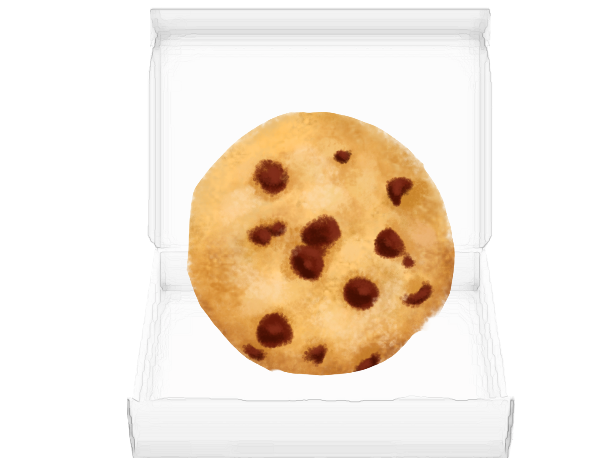

Home
Interview 1
Interview 2
Interview 3
Take Away
The last person I interviewed , (Oscar) is one of my classmates from high school.Similar to me , baking was part of his life as he remembers watching his grandmother and mother bake as a child and the yummy treats that came after the baking was done. He was part of a culinary program during High School and learned some things regarding baking. Some beginner friendly recipes recommended, “I suggest trying your hand at some straightforward recipes like chocolate chip cookies, banana bread, or vanilla cupcakes. These are excellent choices because they typically call for basic ingredients and simple methods, which are perfect for refining your baking skills.” With tools needed for beginner bakers he says,” you'll need to have essentials like measuring cups and spoons, mixing bowls, a hand mixer or stand mixer”. One of the mistakes to avoid with baking according to him is , “Not measuring ingredients correctly. Baking is a bit like a science experiment, so precision matters.Also, be careful not to overmix your batter, as this can result in tough or dense baked goods. Mix just until everything is combined. And always remember to preheat your oven,oh and don't forget to take anything out of the oven before you preheat it, really important.” He also said,”If good consistency is something you are looking for, be sure to follow recipes closely, measure accurately, and pay attention to details like oven temperature and baking times. And don't shy away from practice.Baking involves a bit of trial and error, so don't be disheartened if your first attempt isn't perfect.”Finally another thing that wasn’t really a tip but more of an encouraging statement was “The most important thing is to have fun and enjoy the process” which i really appreciated since trying new things can be discouraging and in the end reminds me of the reason I got interested in baking in the first place,which was to try something fun and something that allows for creative exploration.
Click to eat the treat

Take Away:
With the last interview I was reminded of how baking has been a part of my friend's life since childhood. He shared some simple recipes like chocolate chip cookies and banana bread, perfect for beginners like me.
He stressed the importance of having basic tools like measuring cups and spoons, and he warned against common mistakes like not measuring ingredients correctly or overmixing the batter. But what stood out to me the most was his encouragement to have fun and enjoy the process. It reminded me why I got interested in baking in the first place—to have fun and be creative. With his advice in mind, I'm excited to advance my baking in the future..